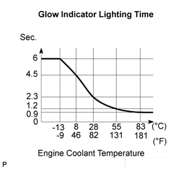
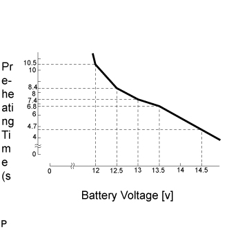
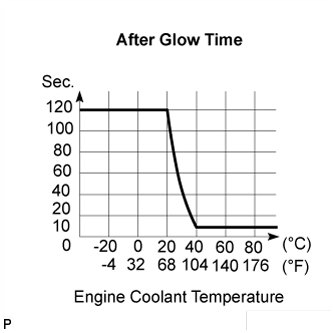
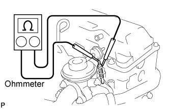

СИСТЕМА ПРЕДПУСКОВОГО ПОДОГРЕВА > ПРОВЕРКА БЕЗ СНЯТИЯ С АВТОМОБИЛЯ |
| 1. INSPECT LIGHTING TIME OF GLOW INDICATOR LIGHT |
|  |
Turn the ignition switch to the ON position, and measure the lighting time.
| 2. INSPECT PRE-HEATING |
|  |
Turn the ignition switch to the ON position, measure the time when the battery voltage is applied to the glow plugs.
| Engine coolant temperature | Pre-Heating time |
| 40°C or more | 1 sec. |
| 40°C or less | Refer to the chart graph (15 sec. at the longest) |
Turn the ignition switch to the START position, and check the battery voltage is applied to the glow plugs.
While cranking the engine, measure the time when the battery voltage is applied to the glow plugs.
| Engine coolant temperature | Pre-Heating time |
| 40°C or more | 1 sec. |
| 40°C or less | Refer to the chart graph (15 sec. at the longest) |
| 3. INSPECT AFTER GLOW TIME |
|  |
After starting the engine starting, measure the time when the battery voltage is applied to the terminal SREL of the ECM.
| 4. INSPECT GLOW PLUGS |
|  |
Using an ohmmeter, measure the resistance between the glow plug terminal and ground.